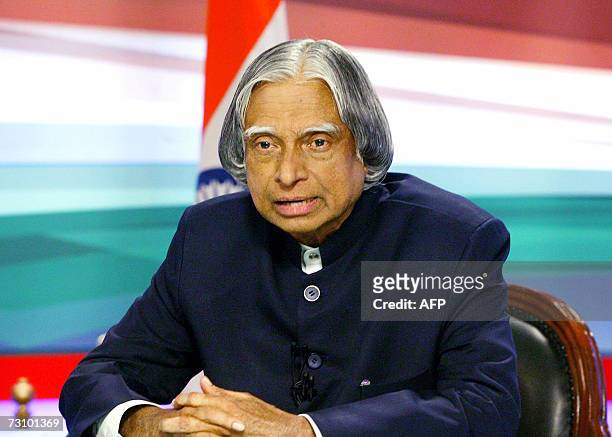

Additional Informations of Dr A.P.J Abdulkalam
political career
In 2002,APJ abdulkalam was elected as the president of india,succeeding K.RNarayanan.he served as the president for for five years,from
2002 to 2007 ,and was widely regarded as one of india's most beloved presidents.During his presidency,kalam focused on issues such as
education,healthcare and rural development.

career awards
APJ Abdulkalam began his career as a scientist in the 1960s and worked for india's civilian space program and military missile
development program.
In 1992,kalam became the chief scientific adviser to the prime minister of india and also served as the Secretary of the Defence Research
and Development organisation(DRDO).
He was awarded the Padma Bhushan in 1981 and Padma Vibhushan in 1990 for his contributions to the indians space program and the military.
Interesting facts
- kalam was elected as the president of india in 2002,succeeding K.R.Narayanan.
- APJ Abdulkalam was th first scientist to hold the position of president and was widely admired for his humble nature and his
commitement to the welfare of the nation.
- APJ Abdulkalam once said,"I am not a politician,I am an ordinary citizen of india.But as president,I have a responsibility to
inspire and motivate the people of this great nation.
- kalam was also a great advocate of science and techonology and believe that india could become a lobal leadet in innovation.
- kalam's contributions to india'fs space program and military were recognized with numerous awards and honors,including the Bharat
Ratna,india's highest civilian award,in 1997.